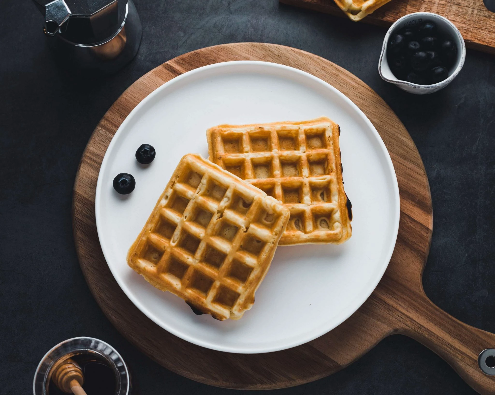

Waffle Clássico
Receita de Waffle clássico
Ingredientes
- 2 xícaras (chá) de farinha de trigo
- 2 colher (sopa) de açúcar
- 2 colheres (chá) de fermento em pó
- 2/1 colher (chá) de sal
- 2 colheres amido de milho
- 3 ovos batidos
- 4 colheres (sopa) de manteiga sem sal derretida
- 1 e 3/4 de xícara (chá) de leite
- 1 colher (sopa) de essência de baunilha
Modo de preparo
- Peneire em um recipiente a farinha de trigo, o açúcar, o amido, o fermento e o sal, Reserve.
- Em outro recipiente misture os ovos batidos com o leite, a manteiga derretida e a essência de baunilha
- Despeje sobre a mistura e farinha e rapidamente incorpore os ingredientes.
- Aqueça o aparelho para Waffles. Coloque uma concha rasa de massa e espalhe até cobrir o molde do aparelho, feche a tampa e deixe assar até a massar ficar bem dourada.
- Retire com espátulas de silicone. Sirva com mel, frutas ou geleia.
Informações adicionais
Você poderá servir estes Waffles no café da manha com geleia.